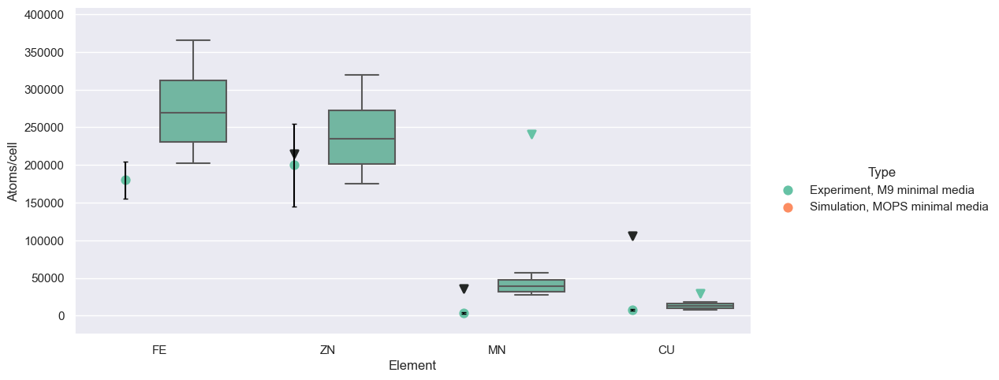

[2]:
import pandas as pd
import numpy as np
import matplotlib.pyplot as plt
import seaborn as sns
import polars as pl
import itertools
import warnings
from scipy.sparse import csr_matrix
import pandas as pd
import statsmodels.api as sm
sns.set(style="darkgrid", palette="Set2")
[3]:
# dont ignore the first line of the csv files. Keep variable as np array
def read_names(file_path):
return np.genfromtxt(file_path, dtype=str, delimiter="\n")
unwrapped_complex_names = read_names("data/complex_names.txt")
unwrapped_monomer_names = read_names("data/protein_names.txt")
unwrapped_cofactor_names = read_names("data/cofactor_names.txt")
unwrapped_element_names = read_names("data/element_ids.txt")
unwrapped_pathway_names = read_names("data/pathway_names.txt")
complex_ids = read_names("data/complex_ids.txt")
monomer_ids = read_names("data/protein_ids.txt")
cofactor_ids = read_names("data/cofactor_ids.txt")
element_ids = read_names("data/element_ids.txt")
pathway_ids = read_names("data/pathway_ids.txt")
aa_ids = read_names("data/amino_acid_ids.txt")
unwrapped_protein_names = np.concatenate([unwrapped_complex_names, unwrapped_monomer_names])
protein_ids = np.concatenate([complex_ids, monomer_ids])
# Reading the matrix CSV files
def read_matrix(file_path, sparse=False):
# add sparse matrix reading
if sparse:
return csr_matrix(pl.read_csv(file_path, has_header=False).to_numpy())
else:
return pl.read_csv(file_path, has_header=False).to_numpy()
C = read_matrix("data/C_matrix.csv", sparse=True)
P = read_matrix("data/P_matrix.csv", sparse=True)
E = read_matrix("data/E_matrix.csv", sparse=True)
W = read_matrix("data/W_matrix.csv", sparse=True)
W2 = read_matrix("data/W2_matrix.csv", sparse=True)
W1 = read_matrix("data/W1_matrix.csv", sparse=True)
A = read_matrix("data/A_matrix.csv")
Tree = read_matrix("data/tree_matrix.csv", sparse=True)
total_counts_min = read_matrix("data/counts.csv")
total_counts = read_matrix("data/rich_counts.csv")
total_counts_anaero = read_matrix("data/anaerobic_counts.csv")
total_counts_big = read_matrix("data/rich_counts_big.csv")
monomer_masses = read_matrix("data/monomer_masses.csv").flatten()
monomer_areas = read_matrix("data/monomer_areas.csv").flatten()
complex_areas = read_matrix("data/complex_areas.csv").flatten()
protein_areas = np.concatenate([complex_areas, monomer_areas])
Validation against 2001 ICP-MS data
[4]:
# find the indices of "FE", "ZN", "MN", "CU", "MO", "NI", "CO":
elements = ["FE", "ZN", "MN", "CU", "MO", "NI", "CO"]
element_indices = [np.where(element_ids == element)[0][0] for element in elements]
# compute the timeseries for the elements
element_timeseries = total_counts @ C @ P @ E[:, element_indices]
# convert to polars dataframe
element_df = pl.DataFrame(element_timeseries, schema=elements)
# melt to long form
element_df = element_df.melt(id_vars=None, value_name="Atoms/cell", variable_name="Element")
sns.histplot(element_df, x="Atoms/cell", hue="Element", element="step")
# plt.xscale("log")
/Users/cyrus/.pyenv/versions/viv-10/lib/python3.10/site-packages/seaborn/_oldcore.py:1119: FutureWarning: use_inf_as_na option is deprecated and will be removed in a future version. Convert inf values to NaN before operating instead.
with pd.option_context('mode.use_inf_as_na', True):
/Users/cyrus/.pyenv/versions/viv-10/lib/python3.10/site-packages/seaborn/_oldcore.py:1075: FutureWarning: When grouping with a length-1 list-like, you will need to pass a length-1 tuple to get_group in a future version of pandas. Pass `(name,)` instead of `name` to silence this warning.
data_subset = grouped_data.get_group(pd_key)
/Users/cyrus/.pyenv/versions/viv-10/lib/python3.10/site-packages/seaborn/_oldcore.py:1075: FutureWarning: When grouping with a length-1 list-like, you will need to pass a length-1 tuple to get_group in a future version of pandas. Pass `(name,)` instead of `name` to silence this warning.
data_subset = grouped_data.get_group(pd_key)
/Users/cyrus/.pyenv/versions/viv-10/lib/python3.10/site-packages/seaborn/_oldcore.py:1075: FutureWarning: When grouping with a length-1 list-like, you will need to pass a length-1 tuple to get_group in a future version of pandas. Pass `(name,)` instead of `name` to silence this warning.
data_subset = grouped_data.get_group(pd_key)
/Users/cyrus/.pyenv/versions/viv-10/lib/python3.10/site-packages/seaborn/_oldcore.py:1075: FutureWarning: When grouping with a length-1 list-like, you will need to pass a length-1 tuple to get_group in a future version of pandas. Pass `(name,)` instead of `name` to silence this warning.
data_subset = grouped_data.get_group(pd_key)
/Users/cyrus/.pyenv/versions/viv-10/lib/python3.10/site-packages/seaborn/_oldcore.py:1075: FutureWarning: When grouping with a length-1 list-like, you will need to pass a length-1 tuple to get_group in a future version of pandas. Pass `(name,)` instead of `name` to silence this warning.
data_subset = grouped_data.get_group(pd_key)
/Users/cyrus/.pyenv/versions/viv-10/lib/python3.10/site-packages/seaborn/_oldcore.py:1075: FutureWarning: When grouping with a length-1 list-like, you will need to pass a length-1 tuple to get_group in a future version of pandas. Pass `(name,)` instead of `name` to silence this warning.
data_subset = grouped_data.get_group(pd_key)
/Users/cyrus/.pyenv/versions/viv-10/lib/python3.10/site-packages/seaborn/_oldcore.py:1075: FutureWarning: When grouping with a length-1 list-like, you will need to pass a length-1 tuple to get_group in a future version of pandas. Pass `(name,)` instead of `name` to silence this warning.
data_subset = grouped_data.get_group(pd_key)
/Users/cyrus/.pyenv/versions/viv-10/lib/python3.10/site-packages/seaborn/_oldcore.py:1075: FutureWarning: When grouping with a length-1 list-like, you will need to pass a length-1 tuple to get_group in a future version of pandas. Pass `(name,)` instead of `name` to silence this warning.
data_subset = grouped_data.get_group(pd_key)
[4]:
<Axes: xlabel='Atoms/cell', ylabel='Count'>
[5]:
elements = ["FE", "ZN", "MN", "CU", "MO", "NI", "CO", "V", "CR"]
val_orig_df = pl.read_csv('external_data/distances.csv')
val_orig_df = val_orig_df.with_columns(( (-9* ( 1 - pl.col("Distance") / pl.col("ScaleDist"))) ).alias("Log concentration"))
val_orig_df = val_orig_df.with_columns( (10**(pl.col("Log concentration"))).alias("Concentration (M)") )
val_orig_df = val_orig_df.with_columns( (pl.col("Concentration (M)") * (10**pl.col("ScaleCounts")) ).alias("Atoms/cell"))
val_orig_df
# filter out the elements
val_df = val_orig_df.filter(pl.col("Element").is_in(elements) & pl.col("Cell") == True)
# val_df = val_df.filter(pl.col("Condition") == "Rich")
val_df.to_pandas()
[5]:
| Condition | Below LOD | Cell | Element | Distance | ScaleDist | ScaleCounts | Error | Log concentration | Concentration (M) | Atoms/cell | |
|---|---|---|---|---|---|---|---|---|---|---|---|
| 0 | Minimal | 0 | 1 | MO | 138.225817 | 354.00 | 9.08603 | 1000.000000 | -5.485784 | 3.267501e-06 | 3983.324414 |
| 1 | Minimal | 0 | 1 | ZN | 205.106947 | 354.00 | 9.08603 | 55212.922173 | -3.785417 | 1.639017e-04 | 199808.236064 |
| 2 | Minimal | 0 | 1 | CU | 149.815832 | 354.00 | 9.08603 | 1000.000000 | -5.191123 | 6.439870e-06 | 7850.676467 |
| 3 | Minimal | 1 | 1 | NI | 137.331179 | 354.00 | 9.08603 | 1000.000000 | -5.508529 | 3.100778e-06 | 3780.077086 |
| 4 | Minimal | 1 | 1 | CO | 103.448109 | 354.00 | 9.08603 | 1000.000000 | -6.369963 | 4.266155e-07 | 520.075813 |
| 5 | Minimal | 0 | 1 | FE | 203.321486 | 354.00 | 9.08603 | 24669.603524 | -3.830810 | 1.476353e-04 | 179978.374255 |
| 6 | Minimal | 0 | 1 | MN | 135.088853 | 354.00 | 9.08603 | 1000.000000 | -5.565538 | 2.719333e-06 | 3315.067378 |
| 7 | Minimal | 0 | 1 | CR | 122.171244 | 354.00 | 9.08603 | 1000.000000 | -5.893951 | 1.276582e-06 | 1556.247155 |
| 8 | Minimal | 0 | 1 | V | 113.253635 | 354.00 | 9.08603 | 1000.000000 | -6.120670 | 7.574077e-07 | 923.335846 |
| 9 | Rich | 0 | 1 | MO | 146.248788 | 353.14 | 9.30606 | 1000.000000 | -5.272756 | 5.336351e-06 | 10797.032626 |
| 10 | Rich | 0 | 1 | ZN | 207.787945 | 353.14 | 9.30606 | 88105.726872 | -3.704391 | 1.975192e-04 | 399640.415582 |
| 11 | Rich | 0 | 1 | CU | 181.919225 | 353.14 | 9.30606 | 29368.575624 | -4.363672 | 4.328410e-05 | 87576.668290 |
| 12 | Rich | 1 | 1 | NI | 125.738288 | 353.14 | 9.30606 | 1000.000000 | -5.795479 | 1.601479e-06 | 3240.269333 |
| 13 | Rich | 1 | 1 | CO | 91.851373 | 353.14 | 9.30606 | 1000.000000 | -6.659109 | 2.192256e-07 | 443.558908 |
| 14 | Rich | 0 | 1 | FE | 214.914378 | 353.14 | 9.30606 | 128046.989721 | -3.522769 | 3.000759e-04 | 607143.184501 |
| 15 | Rich | 0 | 1 | MN | 171.220416 | 353.14 | 9.30606 | 12922.173275 | -4.636338 | 2.310268e-05 | 46743.626407 |
| 16 | Rich | 0 | 1 | CR | 126.630048 | 353.14 | 9.30606 | 1000.000000 | -5.772752 | 1.687517e-06 | 3414.351358 |
| 17 | Rich | 0 | 1 | V | 82.042003 | 353.14 | 9.30606 | 1000.000000 | -6.909107 | 1.232802e-07 | 249.432594 |
Estimate upper limit of atoms/cell available in media
[6]:
media_lim_df = val_orig_df.filter(pl.col("Cell") == False).drop(["Error", "Distance", "ScaleDist", "ScaleCounts"])
# media_lim_df = media_lim_df.filter(pl.col("Condition") == "Rich")
# to convert from atoms/cell in media, take the concentration in the media, convert to atoms by mult w avo, then divide by 3e11 cells per L
media_lim_df = media_lim_df.with_columns( (pl.col("Concentration (M)") * 6.022e23 / 3.5e11).alias("Atoms/cell"))
media_lim_df.to_pandas()
[6]:
| Condition | Below LOD | Cell | Element | Log concentration | Concentration (M) | Atoms/cell | |
|---|---|---|---|---|---|---|---|
| 0 | Minimal | 0 | 0 | MO | -7.730374 | 1.860483e-08 | 3.201094e+04 |
| 1 | Minimal | 0 | 0 | SE | -7.548822 | 2.826037e-08 | 4.862399e+04 |
| 2 | Minimal | 0 | 0 | ZN | -6.903050 | 1.250115e-07 | 2.150911e+05 |
| 3 | Minimal | 0 | 0 | CU | -7.208921 | 6.181290e-08 | 1.063535e+05 |
| 4 | Minimal | 0 | 0 | NI | -7.707702 | 1.960187e-08 | 3.372642e+04 |
| 5 | Minimal | 1 | 0 | CO | -8.342515 | 4.544486e-09 | 7.819112e+03 |
| 6 | Minimal | 1 | 0 | FE | -6.460629 | 3.462353e-07 | 5.957225e+05 |
| 7 | Minimal | 0 | 0 | MN | -7.685031 | 2.065235e-08 | 3.553384e+04 |
| 8 | Minimal | 0 | 0 | CR | -6.687467 | 2.053679e-07 | 3.533501e+05 |
| 9 | Minimal | 0 | 0 | V | -7.707504 | 1.961085e-08 | 3.374187e+04 |
| 10 | Minimal | 0 | 0 | CA | -5.440514 | 3.626489e-06 | 6.239633e+06 |
| 11 | Minimal | 0 | 0 | K | -0.815417 | 1.529617e-01 | 2.631816e+11 |
| 12 | Minimal | 0 | 0 | MG | -3.037294 | 9.177120e-04 | 1.578989e+09 |
| 13 | Rich | 0 | 0 | MO | -6.522642 | 3.001637e-07 | 5.164531e+05 |
| 14 | Rich | 0 | 0 | SE | -7.318041 | 4.807939e-08 | 8.272403e+04 |
| 15 | Rich | 0 | 0 | ZN | -4.931786 | 1.170077e-05 | 2.013201e+07 |
| 16 | Rich | 0 | 0 | CU | -6.840925 | 1.442363e-07 | 2.481688e+05 |
| 17 | Rich | 0 | 0 | NI | -6.954561 | 1.110297e-07 | 1.910345e+05 |
| 18 | Rich | 0 | 0 | CO | -6.818080 | 1.520267e-07 | 2.615729e+05 |
| 19 | Rich | 0 | 0 | FE | -5.272686 | 5.337203e-06 | 9.183039e+06 |
| 20 | Rich | 0 | 0 | MN | -6.795354 | 1.601939e-07 | 2.756250e+05 |
| 21 | Rich | 0 | 0 | CR | -5.499953 | 3.162621e-06 | 5.441516e+06 |
| 22 | Rich | 0 | 0 | V | -5.840933 | 1.442338e-06 | 2.481645e+06 |
| 23 | Rich | 0 | 0 | CA | -3.795494 | 1.601423e-04 | 2.755362e+08 |
| 24 | Rich | 0 | 0 | K | -1.818236 | 1.519720e-02 | 2.614787e+10 |
| 25 | Rich | 0 | 0 | MG | -3.909079 | 1.232881e-04 | 2.121260e+08 |
Import EZ rich composition
[7]:
ez_df = pl.read_csv('external_data/ez_media_concentrations.csv')
# convert µM to molar
ez_df = ez_df.with_columns( (ez_df["Concentration (µM)"] * 1e-6).alias("Concentration (M)") )
# convert to atoms/cell assuming 8.0 * 10^8 cells per L
ez_df = ez_df.with_columns( (ez_df["Concentration (M)"] * 6.022e23 / 2e11).alias("Atoms/cell") )
# Set Zn to 0 since it's unreliable due to contamination
ez_df = ez_df.with_columns(pl.when(pl.col("Element") == "ZN").then(-500000).otherwise(pl.col("Atoms/cell")).alias("Atoms/cell"))
ez_df
[7]:
shape: (14, 6)
| Condition | Element | Concentration (raw) | Concentration (µM) | Concentration (M) | Atoms/cell |
|---|---|---|---|---|---|
| str | str | str | f64 | f64 | f64 |
| "Minimal" | "FE" | "10 µM" | 10.0 | 0.00001 | 3.011e7 |
| "Minimal" | "MN" | "80 nM" | 0.08 | 8.0000e-8 | 240880.0 |
| "Minimal" | "CO" | "30.0 nM" | 0.03 | 3.0000e-8 | 90330.0 |
| "Minimal" | "ZN" | "10 nM" | 0.01 | 1.0000e-8 | -500000.0 |
| "Minimal" | "CU" | "10 nM" | 0.01 | 1.0000e-8 | 30110.0 |
| "Minimal" | "MO" | "3 nM" | 0.003 | 3.0000e-9 | 9033.0 |
| "Minimal" | "NI" | "0 nM" | 0.0 | 0.0 | 0.0 |
| "Rich" | "FE" | "10 µM" | 10.0 | 0.00001 | 3.011e7 |
| "Rich" | "MN" | "80 nM" | 0.08 | 8.0000e-8 | 240880.0 |
| "Rich" | "CO" | "30.0 nM" | 0.03 | 3.0000e-8 | 90330.0 |
| "Rich" | "ZN" | "10 nM" | 0.01 | 1.0000e-8 | -500000.0 |
| "Rich" | "CU" | "10 nM" | 0.01 | 1.0000e-8 | 30110.0 |
| "Rich" | "MO" | "3 nM" | 0.003 | 3.0000e-9 | 9033.0 |
| "Rich" | "NI" | "0 nM" | 0.0 | 0.0 | 0.0 |
Final rich plot
[44]:
rich_exp_caption = "Experiment, LB rich media"
rich_sim_caption = "Simulation, EZ rich media"
minimal_exp_caption = "Experiment, M9 minimal media"
minimal_sim_caption = "Simulation, MOPS minimal media"
[45]:
# copy ez_df to have 0 at the minimal condition
ez_df_copy = ez_df.clone().filter(pl.col("Element").is_in(elements))
ez_df_copy = ez_df_copy.with_columns(pl.when(pl.col("Condition") == "Minimal").then(-500000).otherwise(pl.col("Atoms/cell")).alias("Atoms/cell"))
ez_df_copy = ez_df_copy.with_columns(pl.when(pl.col("Condition") == "Minimal").then(pl.lit(rich_exp_caption)).otherwise(pl.lit(rich_sim_caption)).alias("Type"))
# zero values above 800000
ez_df_copy = ez_df_copy.with_columns(pl.when(pl.col("Atoms/cell") > 800000).then(-500000).otherwise(pl.col("Atoms/cell")).alias("Atoms/cell"))
[46]:
# temporarily modify media_lim_df to have 0 at the minimal condition
media_lim_df_copy = media_lim_df.clone().filter(pl.col("Element").is_in(elements))
media_lim_df_copy = media_lim_df_copy.with_columns(pl.when(pl.col("Condition") == "Minimal").then(-500000).otherwise(pl.col("Atoms/cell")).alias("Atoms/cell"))
media_lim_df_copy = media_lim_df_copy.with_columns(pl.when(pl.col("Condition") == "Minimal").then(pl.lit(rich_sim_caption)).otherwise(pl.lit(rich_exp_caption)).alias("Type"))
# zero values above 800000
media_lim_df_copy = media_lim_df_copy.with_columns(pl.when(pl.col("Atoms/cell") > 800000).then(-500000).otherwise(pl.col("Atoms/cell")).alias("Atoms/cell"))
media_lim_df_copy.to_pandas()
[46]:
| Condition | Below LOD | Cell | Element | Log concentration | Concentration (M) | Atoms/cell | Type | |
|---|---|---|---|---|---|---|---|---|
| 0 | Minimal | 0 | 0 | MO | -7.730374 | 1.860483e-08 | -500000.000000 | Simulation, EZ rich media |
| 1 | Minimal | 0 | 0 | ZN | -6.903050 | 1.250115e-07 | -500000.000000 | Simulation, EZ rich media |
| 2 | Minimal | 0 | 0 | CU | -7.208921 | 6.181290e-08 | -500000.000000 | Simulation, EZ rich media |
| 3 | Minimal | 0 | 0 | NI | -7.707702 | 1.960187e-08 | -500000.000000 | Simulation, EZ rich media |
| 4 | Minimal | 1 | 0 | CO | -8.342515 | 4.544486e-09 | -500000.000000 | Simulation, EZ rich media |
| 5 | Minimal | 1 | 0 | FE | -6.460629 | 3.462353e-07 | -500000.000000 | Simulation, EZ rich media |
| 6 | Minimal | 0 | 0 | MN | -7.685031 | 2.065235e-08 | -500000.000000 | Simulation, EZ rich media |
| 7 | Rich | 0 | 0 | MO | -6.522642 | 3.001637e-07 | 516453.080545 | Experiment, LB rich media |
| 8 | Rich | 0 | 0 | ZN | -4.931786 | 1.170077e-05 | -500000.000000 | Experiment, LB rich media |
| 9 | Rich | 0 | 0 | CU | -6.840925 | 1.442363e-07 | 248168.822328 | Experiment, LB rich media |
| 10 | Rich | 0 | 0 | NI | -6.954561 | 1.110297e-07 | 191034.461764 | Experiment, LB rich media |
| 11 | Rich | 0 | 0 | CO | -6.818080 | 1.520267e-07 | 261572.863674 | Experiment, LB rich media |
| 12 | Rich | 0 | 0 | FE | -5.272686 | 5.337203e-06 | -500000.000000 | Experiment, LB rich media |
| 13 | Rich | 0 | 0 | MN | -6.795354 | 1.601939e-07 | 275624.974698 | Experiment, LB rich media |
[47]:
# find the indices of "FE", "ZN", "MN", "CU", "MO", "NI", "CO":
elements = ["FE", "ZN", "MN", "CU"]
element_indices = [np.where(element_ids == element)[0][0] for element in elements]
# compute the timeseries for the elements
element_timeseries = total_counts @ C @ P @ E[:, element_indices]
# convert to polars dataframe
element_df = pl.DataFrame(element_timeseries, schema=elements)
# melt to long form
element_df = element_df.melt(id_vars=None, value_name="Atoms/cell", variable_name="Element")
# temporarily modify val_df to have 0 at the minimal condition
val_df_copy = val_df.clone()
val_df_copy = val_df_copy.with_columns(pl.when(pl.col("Condition") == "Minimal").then(-500000).otherwise(pl.col("Atoms/cell")).alias("Atoms/cell"))
# add artificial column to separate validation from element_df
val_df_copy = val_df_copy.with_columns(pl.when(pl.col("Condition") == "Minimal").then(pl.lit(rich_sim_caption)).otherwise(pl.lit(rich_exp_caption)).alias("Type"))
g = sns.catplot(data=val_df_copy.to_pandas(), x="Element", y="Atoms/cell",
hue="Type", kind="point", aspect=2, order=elements, join=False, dodge=.4, hue_order=[rich_exp_caption, rich_sim_caption])
element_df = element_df.with_columns(Condition = pl.lit("Minimal"))
element_df = element_df.with_columns(Type = pl.lit(rich_sim_caption))
element_df = pl.concat([element_df, pl.DataFrame({"Element": "FE", "Atoms/cell": -500000, "Condition": "Rich", "Type": rich_exp_caption})])
element_df
# stupid workaround to plot errorbars
for ax in g.axes[0]:
for path in ax.collections:
points = path.get_offsets()
all_x_values = [path.get_offsets()[:, 0] for path in ax.collections]
all_y_values = [path.get_offsets()[:, 1] for path in ax.collections]
x_coords = list(all_x_values[0]) # list(all_x_values[0]) +
y_coords = list(all_y_values[0]) # list(all_y_values[0]) +
error_vals = [val_df.filter((pl.col("Condition") == "Rich") & (pl.col("Element") == element))[0,"Error"] for element in elements]
# add errorbar plot at these coords
plt.errorbar(x = x_coords, y = y_coords, yerr=error_vals, fmt='none', c= 'black', capsize = 2)
# g.map_dataframe(sns.boxplot, data=element_df.to_pandas(), x="Element", y="Atoms/cell",
# hue="Condition")
g.map(sns.pointplot, data=media_lim_df_copy.to_pandas(), x="Element", y="Atoms/cell",
hue="Type", hue_order=[rich_exp_caption, rich_sim_caption], join=False, dodge=.4, label="Media limit", order=elements, markers=['v', None])
g.map(sns.pointplot, data=ez_df_copy.to_pandas(), x="Element", y="Atoms/cell",
hue="Type", hue_order=[rich_exp_caption, rich_sim_caption], join=False, dodge=.4, label="Media limit", order=elements, markers=[None, 'v'])
g.map(sns.boxplot, data=element_df.to_pandas(), x="Element", y="Atoms/cell",
hue="Type", hue_order=[rich_exp_caption, rich_sim_caption], order=elements)
plt.ylim(-50000, None)
# plt.yscale("log")
[47]:
(-50000.0, 796949.6829329402)
[48]:
# find the indices of "FE", "ZN", "MN", "CU", "MO", "NI", "CO":
elements = ["MO", "NI", "CO"]
element_indices = [np.where(element_ids == element)[0][0] for element in elements]
# compute the timeseries for the elements
element_timeseries = total_counts @ C @ P @ E[:, element_indices]
# convert to polars dataframe
element_df = pl.DataFrame(element_timeseries, schema=elements)
# melt to long form
element_df = element_df.melt(id_vars=None, value_name="Atoms/cell", variable_name="Element")
# temporarily modify val_df to have 0 at the minimal condition
val_df_copy = val_df.clone()
val_df_copy = val_df_copy.with_columns(pl.when(pl.col("Condition") == "Minimal").then(-500000).otherwise(pl.col("Atoms/cell")).alias("Atoms/cell"))
# add artificial column to separate validation from element_df
val_df_copy = val_df_copy.with_columns(pl.when(pl.col("Condition") == "Minimal").then(pl.lit(rich_sim_caption)).otherwise(pl.lit(rich_exp_caption)).alias("Type"))
g = sns.catplot(data=val_df_copy.to_pandas(), x="Element", y="Atoms/cell",
hue="Type", kind="point", aspect=1.5, order=elements, join=False, dodge=.4, hue_order=[rich_exp_caption, rich_sim_caption])
element_df = element_df.with_columns(Condition = pl.lit("Minimal"))
element_df = element_df.with_columns(Type = pl.lit(rich_sim_caption))
element_df = pl.concat([element_df, pl.DataFrame({"Element": "FE", "Atoms/cell": -500000, "Condition": "Rich", "Type": rich_exp_caption})])
element_df
# stupid workaround to plot errorbars
for ax in g.axes[0]:
for path in ax.collections:
points = path.get_offsets()
all_x_values = [path.get_offsets()[:, 0] for path in ax.collections]
all_y_values = [path.get_offsets()[:, 1] for path in ax.collections]
x_coords = list(all_x_values[0]) # list(all_x_values[0]) +
y_coords = list(all_y_values[0]) # list(all_y_values[0]) +
error_vals = [val_df.filter((pl.col("Condition") == "Rich") & (pl.col("Element") == element))[0,"Error"] for element in elements]
# add errorbar plot at these coords
plt.errorbar(x = x_coords, y = y_coords, yerr=error_vals, fmt='none', c= 'black', capsize = 2)
# g.map_dataframe(sns.boxplot, data=element_df.to_pandas(), x="Element", y="Atoms/cell",
# hue="Condition")
g.map(sns.pointplot, data=media_lim_df_copy.to_pandas(), x="Element", y="Atoms/cell",
hue="Type", hue_order=[rich_exp_caption, rich_sim_caption], join=False, dodge=.4, label="Media limit", order=elements, markers=['v', None])
g.map(sns.pointplot, data=ez_df_copy.to_pandas(), x="Element", y="Atoms/cell",
hue="Type", hue_order=[rich_exp_caption, rich_sim_caption], join=False, dodge=.4, label="Media limit", order=elements, markers=[None, 'v'])
g.map(sns.boxplot, data=element_df.to_pandas(), x="Element", y="Atoms/cell",
hue="Type", hue_order=[rich_exp_caption, rich_sim_caption], order=elements)
plt.ylim(-1000, 20000)
# plt.yscale("log")
[48]:
(-2000.0, 20000.0)
Final minimal plot
[49]:
element_df
[49]:
shape: (3_904, 4)
| Element | Atoms/cell | Condition | Type |
|---|---|---|---|
| str | i64 | str | str |
| "MO" | 3285 | "Minimal" | "Simulation, EZ… |
| "MO" | 3285 | "Minimal" | "Simulation, EZ… |
| "MO" | 3286 | "Minimal" | "Simulation, EZ… |
| "MO" | 3288 | "Minimal" | "Simulation, EZ… |
| "MO" | 3290 | "Minimal" | "Simulation, EZ… |
| "MO" | 3292 | "Minimal" | "Simulation, EZ… |
| "MO" | 3292 | "Minimal" | "Simulation, EZ… |
| "MO" | 3292 | "Minimal" | "Simulation, EZ… |
| "MO" | 3293 | "Minimal" | "Simulation, EZ… |
| "MO" | 3293 | "Minimal" | "Simulation, EZ… |
| "MO" | 3293 | "Minimal" | "Simulation, EZ… |
| "MO" | 3295 | "Minimal" | "Simulation, EZ… |
| … | … | … | … |
| "CO" | 1376 | "Minimal" | "Simulation, EZ… |
| "CO" | 1376 | "Minimal" | "Simulation, EZ… |
| "CO" | 1376 | "Minimal" | "Simulation, EZ… |
| "CO" | 1376 | "Minimal" | "Simulation, EZ… |
| "CO" | 1376 | "Minimal" | "Simulation, EZ… |
| "CO" | 1376 | "Minimal" | "Simulation, EZ… |
| "CO" | 1376 | "Minimal" | "Simulation, EZ… |
| "CO" | 1376 | "Minimal" | "Simulation, EZ… |
| "CO" | 1378 | "Minimal" | "Simulation, EZ… |
| "CO" | 1378 | "Minimal" | "Simulation, EZ… |
| "CO" | 1378 | "Minimal" | "Simulation, EZ… |
| "FE" | -500000 | "Rich" | "Experiment, LB… |
[50]:
elements = ["FE", "ZN", "MN", "CU", "MO", "NI", "CO"]
# copy ez_df to have 0 at the minimal condition
ez_df_copy = ez_df.clone().filter(pl.col("Element").is_in(elements))
ez_df_copy = ez_df_copy.with_columns(pl.when(pl.col("Condition") == "Rich").then(-500000).otherwise(pl.col("Atoms/cell")).alias("Atoms/cell"))
ez_df_copy = ez_df_copy.with_columns(pl.when(pl.col("Condition") == "Rich").then(pl.lit(minimal_exp_caption)).otherwise(pl.lit(minimal_sim_caption)).alias("Type"))
# zero values above 800000
ez_df_copy = ez_df_copy.with_columns(pl.when(pl.col("Atoms/cell") > 800000).then(-500000).otherwise(pl.col("Atoms/cell")).alias("Atoms/cell"))
[51]:
# temporarily modify media_lim_df to have 0 at the minimal condition
media_lim_df_copy = media_lim_df.clone().filter(pl.col("Element").is_in(elements))
media_lim_df_copy = media_lim_df_copy.with_columns(pl.when(pl.col("Condition") == "Rich").then(-500000).otherwise(pl.col("Atoms/cell")).alias("Atoms/cell"))
media_lim_df_copy = media_lim_df_copy.with_columns(pl.when(pl.col("Condition") == "Rich").then(pl.lit(minimal_sim_caption)).otherwise(pl.lit(minimal_exp_caption)).alias("Type"))
# zero values above 800000
media_lim_df_copy = media_lim_df_copy.with_columns(pl.when(pl.col("Atoms/cell") > 500000).then(-500000).otherwise(pl.col("Atoms/cell")).alias("Atoms/cell"))
media_lim_df_copy.to_pandas()
[51]:
| Condition | Below LOD | Cell | Element | Log concentration | Concentration (M) | Atoms/cell | Type | |
|---|---|---|---|---|---|---|---|---|
| 0 | Minimal | 0 | 0 | MO | -7.730374 | 1.860483e-08 | 32010.938103 | Experiment, M9 minimal media |
| 1 | Minimal | 0 | 0 | ZN | -6.903050 | 1.250115e-07 | 215091.142940 | Experiment, M9 minimal media |
| 2 | Minimal | 0 | 0 | CU | -7.208921 | 6.181290e-08 | 106353.506190 | Experiment, M9 minimal media |
| 3 | Minimal | 0 | 0 | NI | -7.707702 | 1.960187e-08 | 33726.423494 | Experiment, M9 minimal media |
| 4 | Minimal | 1 | 0 | CO | -8.342515 | 4.544486e-09 | 7819.112138 | Experiment, M9 minimal media |
| 5 | Minimal | 1 | 0 | FE | -6.460629 | 3.462353e-07 | -500000.000000 | Experiment, M9 minimal media |
| 6 | Minimal | 0 | 0 | MN | -7.685031 | 2.065235e-08 | 35533.842778 | Experiment, M9 minimal media |
| 7 | Rich | 0 | 0 | MO | -6.522642 | 3.001637e-07 | -500000.000000 | Simulation, MOPS minimal media |
| 8 | Rich | 0 | 0 | ZN | -4.931786 | 1.170077e-05 | -500000.000000 | Simulation, MOPS minimal media |
| 9 | Rich | 0 | 0 | CU | -6.840925 | 1.442363e-07 | -500000.000000 | Simulation, MOPS minimal media |
| 10 | Rich | 0 | 0 | NI | -6.954561 | 1.110297e-07 | -500000.000000 | Simulation, MOPS minimal media |
| 11 | Rich | 0 | 0 | CO | -6.818080 | 1.520267e-07 | -500000.000000 | Simulation, MOPS minimal media |
| 12 | Rich | 0 | 0 | FE | -5.272686 | 5.337203e-06 | -500000.000000 | Simulation, MOPS minimal media |
| 13 | Rich | 0 | 0 | MN | -6.795354 | 1.601939e-07 | -500000.000000 | Simulation, MOPS minimal media |
[52]:
# find the indices of "FE", "ZN", "MN", "CU", "MO", "NI", "CO":
elements = ["FE", "ZN", "MN", "CU"]
element_indices = [np.where(element_ids == element)[0][0] for element in elements]
# compute the timeseries for the elements
element_timeseries = total_counts_min @ C @ P @ E[:, element_indices]
# convert to polars dataframe
element_df = pl.DataFrame(element_timeseries, schema=elements)
# melt to long form
element_df = element_df.melt(id_vars=None, value_name="Atoms/cell", variable_name="Element")
# temporarily modify val_df to have 0 at the minimal condition
val_df_copy = val_df.clone()
val_df_copy = val_df_copy.with_columns(pl.when(pl.col("Condition") == "Rich").then(-500000).otherwise(pl.col("Atoms/cell")).alias("Atoms/cell"))
# add artificial column to separate validation from element_df
val_df_copy = val_df_copy.with_columns(pl.when(pl.col("Condition") == "Rich").then(pl.lit(minimal_sim_caption)).otherwise(pl.lit(minimal_exp_caption)).alias("Type"))
g = sns.catplot(data=val_df_copy.to_pandas(), x="Element", y="Atoms/cell",
hue="Type", kind="point", aspect=2, order=elements, join=False, dodge=.4)
element_df = element_df.with_columns(Condition = pl.lit("Rich"))
element_df = element_df.with_columns(Type = pl.lit(minimal_sim_caption))
element_df = pl.concat([element_df, pl.DataFrame({"Element": "FE", "Atoms/cell": -500000, "Condition": "Minimal", "Type": minimal_exp_caption})])
element_df
# stupid workaround to plot errorbars
for ax in g.axes[0]:
for path in ax.collections:
points = path.get_offsets()
all_x_values = [path.get_offsets()[:, 0] for path in ax.collections]
all_y_values = [path.get_offsets()[:, 1] for path in ax.collections]
x_coords = list(all_x_values[0]) # list(all_x_values[0]) +
y_coords = list(all_y_values[0]) # list(all_y_values[0]) +
error_vals = [val_df.filter((pl.col("Condition") == "Minimal") & (pl.col("Element") == element))[0,"Error"] for element in elements]
# add errorbar plot at these coords
plt.errorbar(x = x_coords, y = y_coords, yerr=error_vals, fmt='none', c= 'black', capsize = 2)
# g.map_dataframe(sns.boxplot, data=element_df.to_pandas(), x="Element", y="Atoms/cell",
# hue="Condition")
g.map(sns.pointplot, data=media_lim_df_copy.to_pandas(), x="Element", y="Atoms/cell",
hue="Type", hue_order=[minimal_exp_caption, minimal_sim_caption], join=False, dodge=.4, label="Media limit", order=elements, markers=['v', None])
g.map(sns.pointplot, data=ez_df_copy.to_pandas(), x="Element", y="Atoms/cell",
hue="Type", hue_order=[minimal_exp_caption, minimal_sim_caption], join=False, dodge=.4, label="Media limit", order=elements, markers=[None, 'v'])
g.map(sns.boxplot, data=element_df.to_pandas(), x="Element", y="Atoms/cell",
hue="Type", hue_order=[minimal_exp_caption, minimal_sim_caption])
# set lower ylim to 0
plt.ylim(-25000, None)
# plt.yscale("log")
/Users/cyrus/.pyenv/versions/viv-10/lib/python3.10/site-packages/seaborn/axisgrid.py:712: UserWarning: Using the boxplot function without specifying `order` is likely to produce an incorrect plot.
warnings.warn(warning)
[52]:
(-25000.0, 408777.1)

[53]:
# find the indices of "FE", "ZN", "MN", "CU", "MO", "NI", "CO":
elements = ["MO", "NI", "CO"]
element_indices = [np.where(element_ids == element)[0][0] for element in elements]
# compute the timeseries for the elements
element_timeseries = total_counts_min @ C @ P @ E[:, element_indices]
# convert to polars dataframe
element_df = pl.DataFrame(element_timeseries, schema=elements)
# melt to long form
element_df = element_df.melt(id_vars=None, value_name="Atoms/cell", variable_name="Element")
# temporarily modify val_df to have 0 at the minimal condition
val_df_copy = val_df.clone()
val_df_copy = val_df_copy.with_columns(pl.when(pl.col("Condition") == "Rich").then(-500000).otherwise(pl.col("Atoms/cell")).alias("Atoms/cell"))
# add artificial column to separate validation from element_df
val_df_copy = val_df_copy.with_columns(pl.when(pl.col("Condition") == "Rich").then(pl.lit(minimal_sim_caption)).otherwise(pl.lit(minimal_exp_caption)).alias("Type"))
g = sns.catplot(data=val_df_copy.to_pandas(), x="Element", y="Atoms/cell",
hue="Type", kind="point", aspect=2, order=elements, join=False, dodge=.4)
element_df = element_df.with_columns(Condition = pl.lit("Rich"))
element_df = element_df.with_columns(Type = pl.lit(minimal_sim_caption))
element_df = pl.concat([element_df, pl.DataFrame({"Element": "FE", "Atoms/cell": -500000, "Condition": "Minimal", "Type": minimal_exp_caption})])
element_df
# stupid workaround to plot errorbars
for ax in g.axes[0]:
for path in ax.collections:
points = path.get_offsets()
all_x_values = [path.get_offsets()[:, 0] for path in ax.collections]
all_y_values = [path.get_offsets()[:, 1] for path in ax.collections]
x_coords = list(all_x_values[0]) # list(all_x_values[0]) +
y_coords = list(all_y_values[0]) # list(all_y_values[0]) +
error_vals = [val_df.filter((pl.col("Condition") == "Minimal") & (pl.col("Element") == element))[0,"Error"] for element in elements]
# add errorbar plot at these coords
plt.errorbar(x = x_coords, y = y_coords, yerr=error_vals, fmt='none', c= 'black', capsize = 2)
# g.map_dataframe(sns.boxplot, data=element_df.to_pandas(), x="Element", y="Atoms/cell",
# hue="Condition")
g.map(sns.pointplot, data=media_lim_df_copy.to_pandas(), x="Element", y="Atoms/cell",
hue="Type", hue_order=[minimal_exp_caption, minimal_sim_caption], join=False, dodge=.4, label="Media limit", order=elements, markers=['v', None])
g.map(sns.pointplot, data=ez_df_copy.to_pandas(), x="Element", y="Atoms/cell",
hue="Type", hue_order=[minimal_exp_caption, minimal_sim_caption], join=False, dodge=.4, label="Media limit", order=elements, markers=[None, 'v'])
g.map(sns.boxplot, data=element_df.to_pandas(), x="Element", y="Atoms/cell",
hue="Type", hue_order=[minimal_exp_caption, minimal_sim_caption])
# set lower ylim to 0
plt.ylim(-500, 10000)
# plt.yscale("log")
/Users/cyrus/.pyenv/versions/viv-10/lib/python3.10/site-packages/seaborn/axisgrid.py:712: UserWarning: Using the boxplot function without specifying `order` is likely to produce an incorrect plot.
warnings.warn(warning)
[53]:
(-2000.0, 10000.0)
Single-cell data
[54]:
elements = ["FE", "ZN", "MN", "CU", "MO", "NI", "CO"]
element_indices = [np.where(element_ids == element)[0][0] for element in elements]
sc_df = pl.read_csv('external_data/single_cell_fe.csv')
# remove the first row
# sc_df = sc_df.filter((pl.col("Bin") > 16) & (pl.col("Bin") < 60))
# create 1d list of all bins with comprehension
bins = sc_df["Bin"].to_numpy()
counts = sc_df["Count"].to_numpy()
# create a list with bin value repeated counts times
real_hist_data = np.repeat(bins, counts)
[55]:
# compute the timeseries for the elements
big_element_timeseries = total_counts_big[:, 1:-1] @ C @ P @ E[:, element_indices]
# convert to polars dataframe
big_element_df = pl.DataFrame(big_element_timeseries, schema=elements)
# add Timestep and Cell index from total_counts_big
big_element_df = big_element_df.with_columns(pl.DataFrame(total_counts_big[:, [0, -1]], schema=["Timestep", "Cell index"]))
big_element_df
# Groupby cell index, then add the max timestep for each cell
max_timestep = big_element_df.group_by("Cell index").agg(pl.col("Timestep").max().alias("Max timestep"))
# merge with original
big_element_df = big_element_df.join(max_timestep, on="Cell index")
# calculate cell density correction factor with 2 ^((Max timestep - Timestep)/Max timestep)
big_element_df = big_element_df.with_columns( (2 ** ((big_element_df["Max timestep"] - big_element_df["Timestep"])
/ big_element_df["Max timestep"])).alias("Density correction"))
# remove all cols except element, cell index and density correction
big_element_df = big_element_df.drop(["Timestep", "Max timestep"])
# multiply the atoms/cell by the density correction
big_element_df = big_element_df.melt(id_vars=["Cell index", "Density correction"], value_name="Atoms/cell", variable_name="Element")
[60]:
# filter FE
big_fe_df = big_element_df.filter(pl.col("Element") == "FE")
# convert atoms/cell to float
big_fe_df = big_fe_df.with_columns( (big_fe_df["Atoms/cell"] * 55.85 * 10**18 * 0.92 / (6.023*10**23)).alias("Fe-56 (ag)"))
# create a weighted KDE plot
sns.kdeplot(data=big_fe_df.to_pandas(), x="Fe-56 (ag)", weights="Density correction", fill=True, bw_adjust=2, label="Aggregate simulation")
# sns.histplot(data=big_fe_df.to_pandas(), x="Fe-56 (ag)", weights="Density correction",stat="density", binwidth=10, alpha=0.5, label="Aggregate sim")
# plot every cell from 0 to 18 with low alpha and gray color
for i in range(0, 18):
if i == 1:
sns.kdeplot(data=big_fe_df.filter(pl.col("Cell index") == i).to_pandas(), x="Fe-56 (ag)",
weights="Density correction", fill=True, bw_adjust=2, alpha=0.1, color="gray", linewidth=0.2, label="Single-cell simulation")
else:
sns.kdeplot(data=big_fe_df.filter(pl.col("Cell index") == i).to_pandas(), x="Fe-56 (ag)",
# weights="Density correction",
fill=True, bw_adjust=2, alpha=0.02, color="gray", linewidth=0.05)
# sns.kdeplot(data=big_fe_df.filter(pl.col("Cell index") == 10).to_pandas(), x="Fe-56 (ag)",
# weights="Density correction", fill=True, bw_adjust=2, label="Random cell 10")
# sns.kdeplot(data=big_fe_df.filter(pl.col("Cell index") == 3).to_pandas(), x="Fe-56 (ag)",
# weights="Density correction", fill=True, bw_adjust=2, label="Random cell 3")
# plot histogram data in sc_df, as lineplot with fill
sns.kdeplot(data=real_hist_data, fill=True, bw_adjust=1.3, label="Real single-cell dist.")
# sns.histplot(real_hist_data, element="step", stat="density", binwidth=10, alpha=0.3, label="Real single-cell dist.", binrange=(10, 90))
plt.legend()
/Users/cyrus/.pyenv/versions/viv-10/lib/python3.10/site-packages/seaborn/_oldcore.py:1119: FutureWarning: use_inf_as_na option is deprecated and will be removed in a future version. Convert inf values to NaN before operating instead.
with pd.option_context('mode.use_inf_as_na', True):
/Users/cyrus/.pyenv/versions/viv-10/lib/python3.10/site-packages/seaborn/_oldcore.py:1119: FutureWarning: use_inf_as_na option is deprecated and will be removed in a future version. Convert inf values to NaN before operating instead.
with pd.option_context('mode.use_inf_as_na', True):
/Users/cyrus/.pyenv/versions/viv-10/lib/python3.10/site-packages/seaborn/_oldcore.py:1119: FutureWarning: use_inf_as_na option is deprecated and will be removed in a future version. Convert inf values to NaN before operating instead.
with pd.option_context('mode.use_inf_as_na', True):
/Users/cyrus/.pyenv/versions/viv-10/lib/python3.10/site-packages/seaborn/_oldcore.py:1119: FutureWarning: use_inf_as_na option is deprecated and will be removed in a future version. Convert inf values to NaN before operating instead.
with pd.option_context('mode.use_inf_as_na', True):
/Users/cyrus/.pyenv/versions/viv-10/lib/python3.10/site-packages/seaborn/_oldcore.py:1119: FutureWarning: use_inf_as_na option is deprecated and will be removed in a future version. Convert inf values to NaN before operating instead.
with pd.option_context('mode.use_inf_as_na', True):
/Users/cyrus/.pyenv/versions/viv-10/lib/python3.10/site-packages/seaborn/_oldcore.py:1119: FutureWarning: use_inf_as_na option is deprecated and will be removed in a future version. Convert inf values to NaN before operating instead.
with pd.option_context('mode.use_inf_as_na', True):
/Users/cyrus/.pyenv/versions/viv-10/lib/python3.10/site-packages/seaborn/_oldcore.py:1119: FutureWarning: use_inf_as_na option is deprecated and will be removed in a future version. Convert inf values to NaN before operating instead.
with pd.option_context('mode.use_inf_as_na', True):
/Users/cyrus/.pyenv/versions/viv-10/lib/python3.10/site-packages/seaborn/_oldcore.py:1119: FutureWarning: use_inf_as_na option is deprecated and will be removed in a future version. Convert inf values to NaN before operating instead.
with pd.option_context('mode.use_inf_as_na', True):
/Users/cyrus/.pyenv/versions/viv-10/lib/python3.10/site-packages/seaborn/_oldcore.py:1119: FutureWarning: use_inf_as_na option is deprecated and will be removed in a future version. Convert inf values to NaN before operating instead.
with pd.option_context('mode.use_inf_as_na', True):
/Users/cyrus/.pyenv/versions/viv-10/lib/python3.10/site-packages/seaborn/_oldcore.py:1119: FutureWarning: use_inf_as_na option is deprecated and will be removed in a future version. Convert inf values to NaN before operating instead.
with pd.option_context('mode.use_inf_as_na', True):
/Users/cyrus/.pyenv/versions/viv-10/lib/python3.10/site-packages/seaborn/_oldcore.py:1119: FutureWarning: use_inf_as_na option is deprecated and will be removed in a future version. Convert inf values to NaN before operating instead.
with pd.option_context('mode.use_inf_as_na', True):
/Users/cyrus/.pyenv/versions/viv-10/lib/python3.10/site-packages/seaborn/_oldcore.py:1119: FutureWarning: use_inf_as_na option is deprecated and will be removed in a future version. Convert inf values to NaN before operating instead.
with pd.option_context('mode.use_inf_as_na', True):
/Users/cyrus/.pyenv/versions/viv-10/lib/python3.10/site-packages/seaborn/_oldcore.py:1119: FutureWarning: use_inf_as_na option is deprecated and will be removed in a future version. Convert inf values to NaN before operating instead.
with pd.option_context('mode.use_inf_as_na', True):
/Users/cyrus/.pyenv/versions/viv-10/lib/python3.10/site-packages/seaborn/_oldcore.py:1119: FutureWarning: use_inf_as_na option is deprecated and will be removed in a future version. Convert inf values to NaN before operating instead.
with pd.option_context('mode.use_inf_as_na', True):
/Users/cyrus/.pyenv/versions/viv-10/lib/python3.10/site-packages/seaborn/_oldcore.py:1119: FutureWarning: use_inf_as_na option is deprecated and will be removed in a future version. Convert inf values to NaN before operating instead.
with pd.option_context('mode.use_inf_as_na', True):
/Users/cyrus/.pyenv/versions/viv-10/lib/python3.10/site-packages/seaborn/_oldcore.py:1119: FutureWarning: use_inf_as_na option is deprecated and will be removed in a future version. Convert inf values to NaN before operating instead.
with pd.option_context('mode.use_inf_as_na', True):
/Users/cyrus/.pyenv/versions/viv-10/lib/python3.10/site-packages/seaborn/_oldcore.py:1119: FutureWarning: use_inf_as_na option is deprecated and will be removed in a future version. Convert inf values to NaN before operating instead.
with pd.option_context('mode.use_inf_as_na', True):
/Users/cyrus/.pyenv/versions/viv-10/lib/python3.10/site-packages/seaborn/_oldcore.py:1119: FutureWarning: use_inf_as_na option is deprecated and will be removed in a future version. Convert inf values to NaN before operating instead.
with pd.option_context('mode.use_inf_as_na', True):
/Users/cyrus/.pyenv/versions/viv-10/lib/python3.10/site-packages/seaborn/_oldcore.py:1119: FutureWarning: use_inf_as_na option is deprecated and will be removed in a future version. Convert inf values to NaN before operating instead.
with pd.option_context('mode.use_inf_as_na', True):
/Users/cyrus/.pyenv/versions/viv-10/lib/python3.10/site-packages/seaborn/_oldcore.py:1119: FutureWarning: use_inf_as_na option is deprecated and will be removed in a future version. Convert inf values to NaN before operating instead.
with pd.option_context('mode.use_inf_as_na', True):
[60]:
<matplotlib.legend.Legend at 0x2c9a1cb50>
[57]:
# Compare different real bulk data sets
[57]:
[ ]: